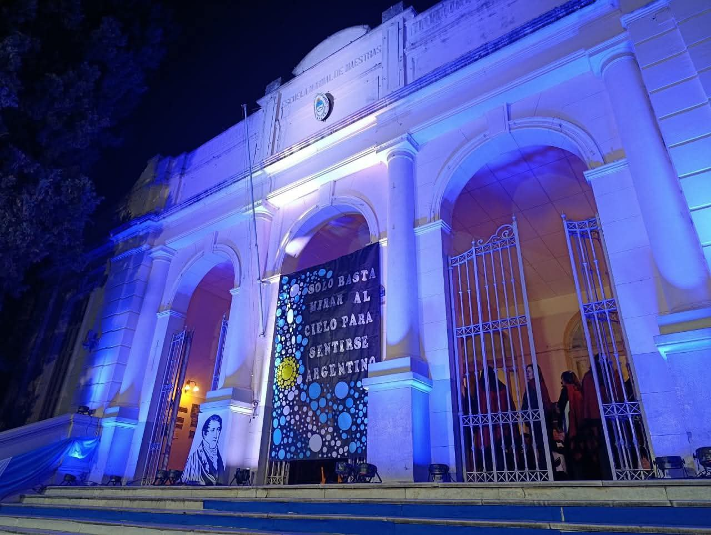

Instituto de Educación Superior N° 6001
Formando docentes y técnicos en la provincia de Salta. Conoce nuestra oferta académica.
Formando docentes y técnicos en la provincia de Salta. Conoce nuestra oferta académica.
Para ver todas las noticias, dirigirse a: https://red.infd.edu.ar/
La Tecnicatura Superior en Análisis de Sistemas forma profesionales capaces de analizar, diseñar y desarrollar soluciones informáticas innovadoras para organizaciones públicas y privadas.
Competencias en programación, bases de datos, análisis de requerimientos, testing, redes y gestión de proyectos.
El profesorado de Educación Secundaria en Ciencia Política, se aprueba su nuevo diseño curricular en el año 2015.
La Escuela Normal tiene una amplia trayectoria en la formación de maestros. Más de 100 años formando docentes, con lo cual el Profesorado para la enseñanza primaria es uno de los pilares de nuestra Institución, que ha sabido formar a maestras y profesores que se han distinguido en Salta.
Dentro de la propuesta de Formación Docente en Educación Primaria, también existe el Profesorado con orientación a Jóvenes y Adultos que se cursa hasta el 3º año conjuntamente con el Profesorado en Educación Primaria.
La tecnicatura en Bibliotecología y Ciencia de la Información, se aprueba en el año 2014.